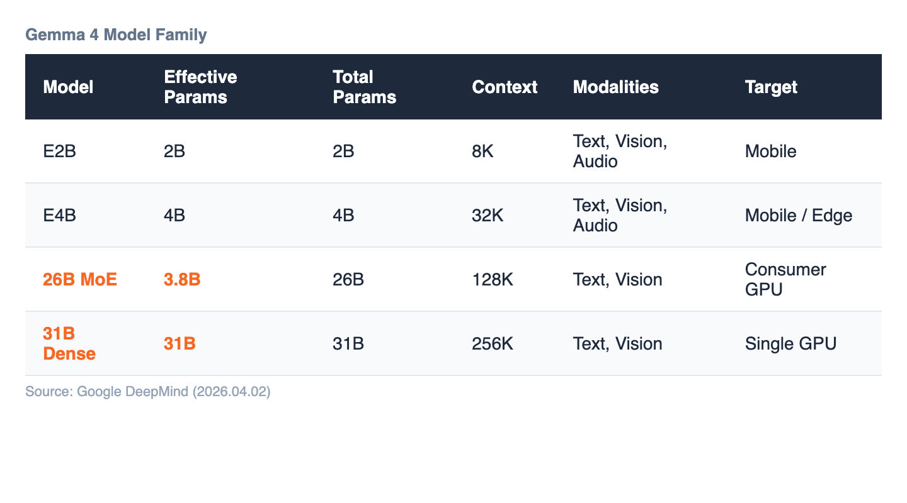
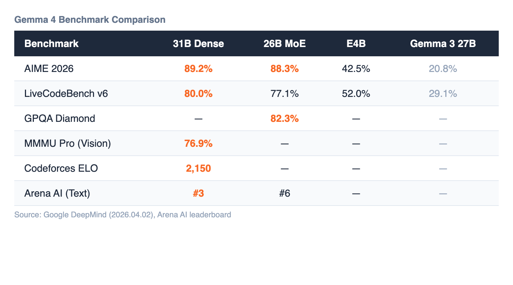

When Google DeepMind released Gemma 4 on April 2, 2026, the headlines focused on the numbers: 89.2% on AIME 2026, a four-fold leap over the previous generation. A 26B Mixture-of-Experts model that activates only 3.8 billion parameters per token. Edge models small enough for smartphones that outperform last year's 27B flagship.
The numbers are impressive. But VentureBeat's Sam Witteveen may have identified the real story when he wrote: "That license change may matter more than benchmarks."
He's talking about Apache 2.0.
For the past two years, "open source AI" has been a term used loosely. Meta's Llama carries a 700 million monthly active user cap. Previous Gemma releases used a custom license with clauses that required legal interpretation before commercial deployment. Mistral and Alibaba's Qwen shipped under Apache 2.0 and quietly captured enterprise adoption — not because they were always the best models, but because legal teams could approve them in days instead of weeks.
Gemma 4 eliminates that friction entirely. No custom clauses. No Harmful Use carve-outs requiring interpretation. No restrictions on redistribution, fine-tuned derivatives, or commercial deployment. Google's official announcement explicitly invokes "digital sovereignty" and "complete control over your data, infrastructure, and models."
Gemma 4 ships as a family of four:
E2B and E4B are edge models designed for on-device deployment. They introduce Per-Layer Embeddings (PLE) — a technique that gives each transformer layer its own embedding table, replacing the traditional single shared embedding. The result: the E4B outperforms Gemma 3's 27B model on most benchmarks at roughly one-sixth the size. Both include native audio encoders for on-device speech recognition.
26B MoE uses 128 small experts with 8 active per token, plus one always-on shared expert. The design choice is deliberately contrarian — most recent MoE models use fewer, larger experts. The payoff is serving economics: 27B-class reasoning quality at 4B-class throughput. For production environments where token cost matters, this changes the math on self-hosting.
31B Dense is the quality ceiling. Single-GPU deployable, 256K context window, and the highest raw performance in the family. AIME 2026: 89.2%. LiveCodeBench v6: 80.0%. Arena AI text ranking: #3 globally.
All four models include native function calling — not prompt-engineered tool use, but architecturally trained multi-turn agentic workflows. Combined with structured JSON output and native system instructions, this is the infrastructure layer for autonomous agent systems.

The generational leap is not incremental. On AIME 2026, Gemma 3 27B scored 20.8%. Gemma 4's 31B Dense scores 89.2% — a qualitative transformation in reasoning capability.

The concept of "sovereign AI" — running AI infrastructure entirely within organizational or national boundaries — has been discussed for years. The practical barrier has always been the same: the best open models came with licensing strings attached.
Apache 2.0 removes the last legal barrier. An enterprise can now:
No data leaves the organization. No API dependency. No licensing ambiguity about derived works.
For industries where data sovereignty is non-negotiable — healthcare, defense, financial services, manufacturing — this is the difference between a proof-of-concept and a production deployment.
Gemma 4 launched with same-day support across the major deployment stack: Ollama, vLLM, LM Studio, llama.cpp, MLX for Apple Silicon, NVIDIA NIM, Google Cloud Run serverless, and Hugging Face Transformers. Fine-tuning is supported through TRL (with new multimodal tool response capabilities), Unsloth Studio, Vertex AI, and Keras.
Hardware partners include NVIDIA (Jetson to Blackwell), AMD ROCm, Google's own Trillium and Ironwood TPUs, Qualcomm, and MediaTek for mobile. The breadth suggests Google is positioning Gemma 4 not as a single model release but as an ecosystem play.
Benchmarks will continue to be contested. Qwen 3.5, GLM-5, and Kimi K2.5 are all competing aggressively in this parameter range. What's harder to replicate is the combination: frontier-competitive reasoning, native multimodal and agentic capabilities, 256K context, broad hardware support, and a genuinely open license — all in one package.
The real question for enterprise teams is not "which model scores highest on AIME?" It's: "Can we legally, technically, and economically run this in our own infrastructure, on our own data, for our own products?"
With Gemma 4, the answer is yes.